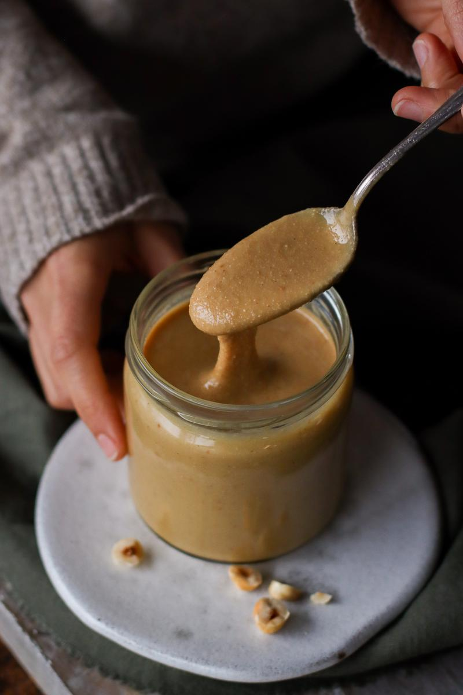
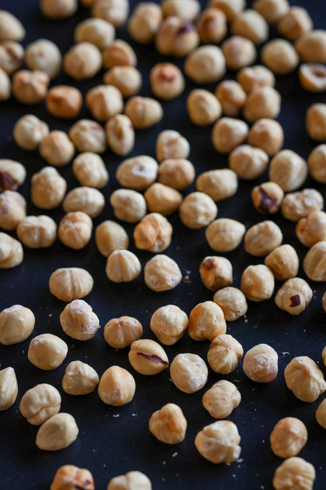
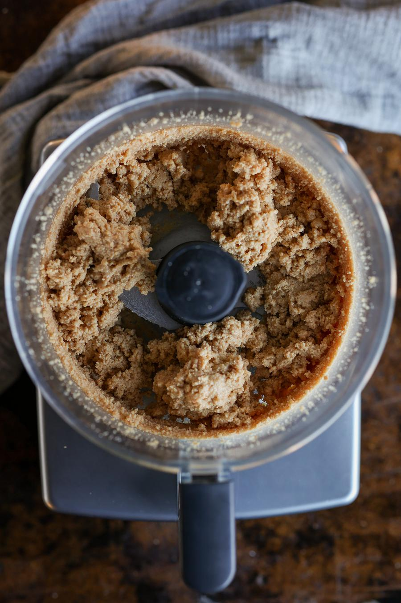
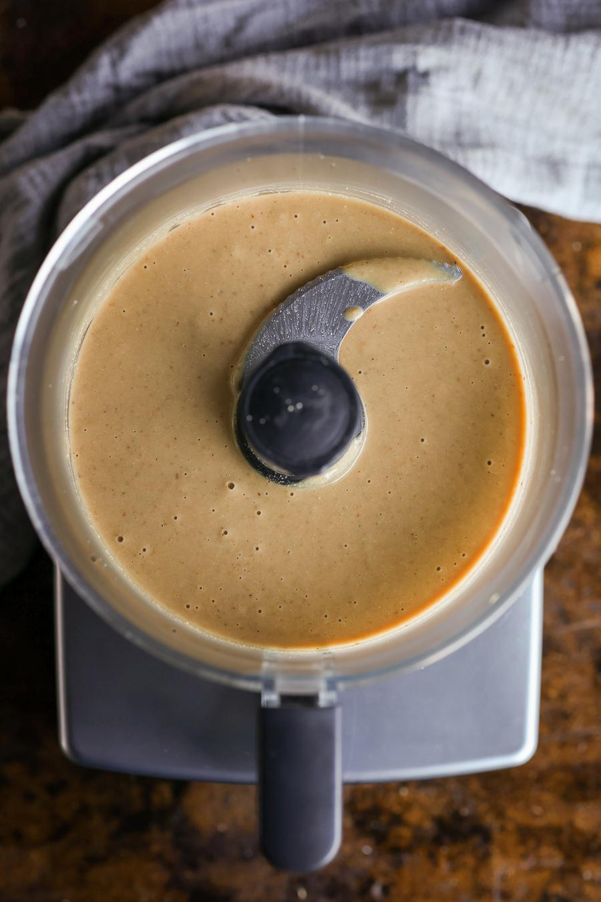
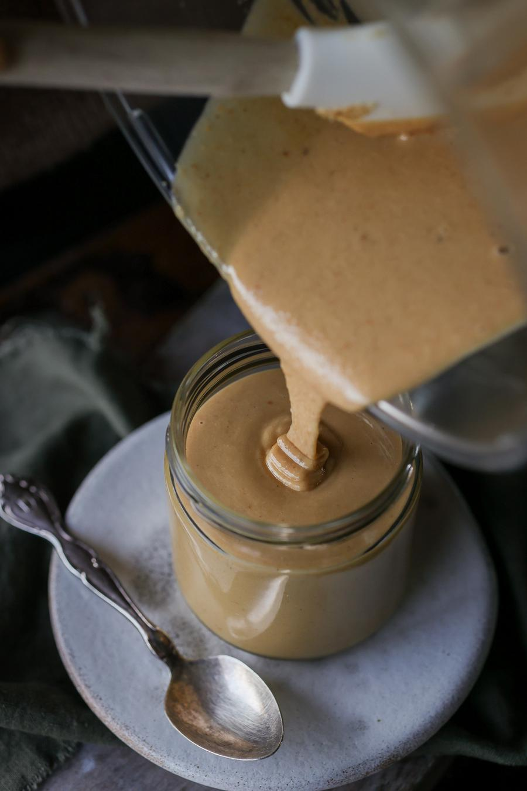

Homemade Hazelnut Butter

- 🍽️Servings: 24
- 🍝Total time: 18 min
- ⏱️Prep time: 7 min
- 🧑🏼🍳Cook time: 11 min
Ingredients
- 3 cups (405 g) raw blanched hazelnuts†
Directions
- Preheat the oven to 350°F (180°C). Spread the hazelnuts onto a baking tray and bake for 9 - 10 minutes, until lightly golden and fragrant, stirring once halfway*.

- Place the toasted hazelnuts in a food processor (ideally 600W or higher). Using a blender is not advised as there is not enough liquid. Blend on high for about 5 minutes, or until a nut butter consistency is formed. The mixture will go from crumbly to smooth over this time*.


Notes
- † If your hazelnuts have the brown skin still on, you'll have to remove it after you take them out of the oven. When cooled enough to handle, rub them firmly between the palms of your hands.
- * Be careful not to overcook, as the nuts continue to 'cook' even when taken out of the oven.
- * You may need to blend it for an extra 5 minutes to achieve the desired consistency or consider adding a bit of vegetable oil or coconut oil.
Storage
- Store in an airtight container or mason jar in a cool, dry, and dark place for up to one month. Store in the fridge for up to three months.
